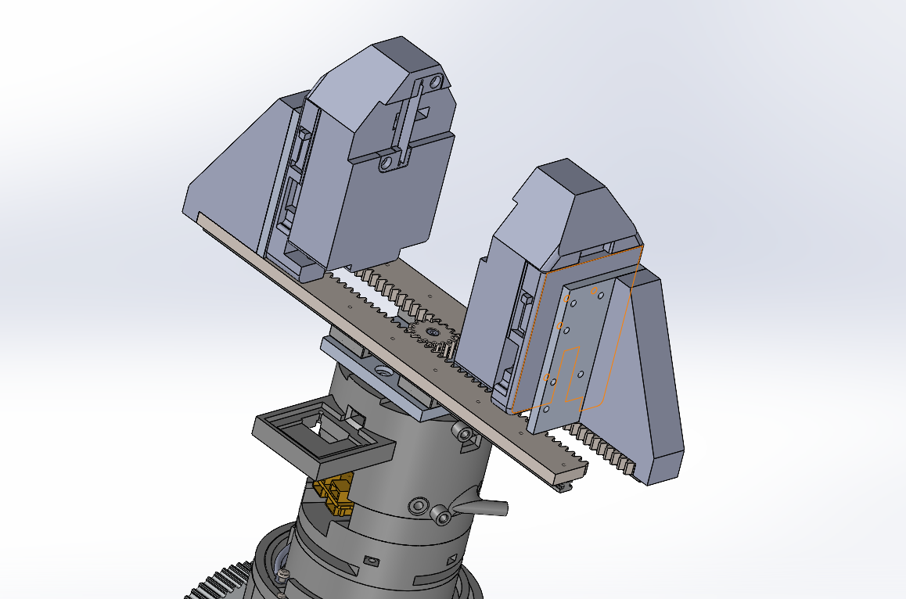
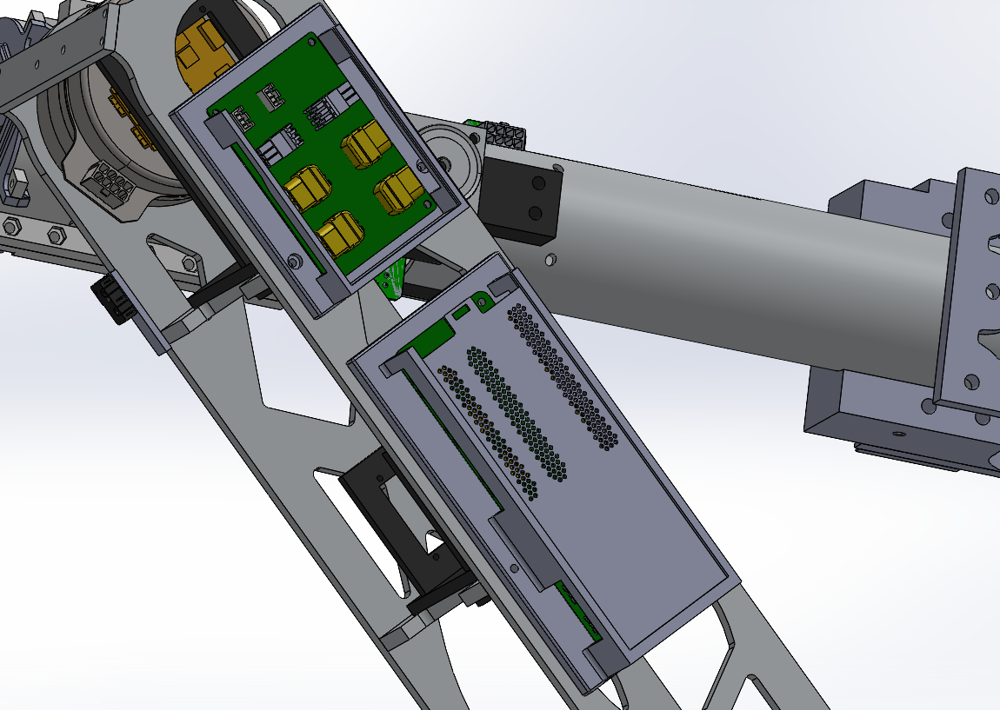

Design Process
I was on the End Effector focus group of the Arm subteam and improved the structural integrity of the fingers on the gripper. I used Solidworks and GitHub to constantly update and improve the team CAD file.

Design Process
I worked on developing PCB boards for the arm on Altium Designer so the design would be more modular and easier to take apart. Particularly for the end effector board, it had to run CAN lines through which required impedance matching and careful management of distance to other components and wires. Afterwards, I was also responsible for creating dust cover PCB mounts, which I designed to be a sliding cover with small patterned holes to see the power LED.
